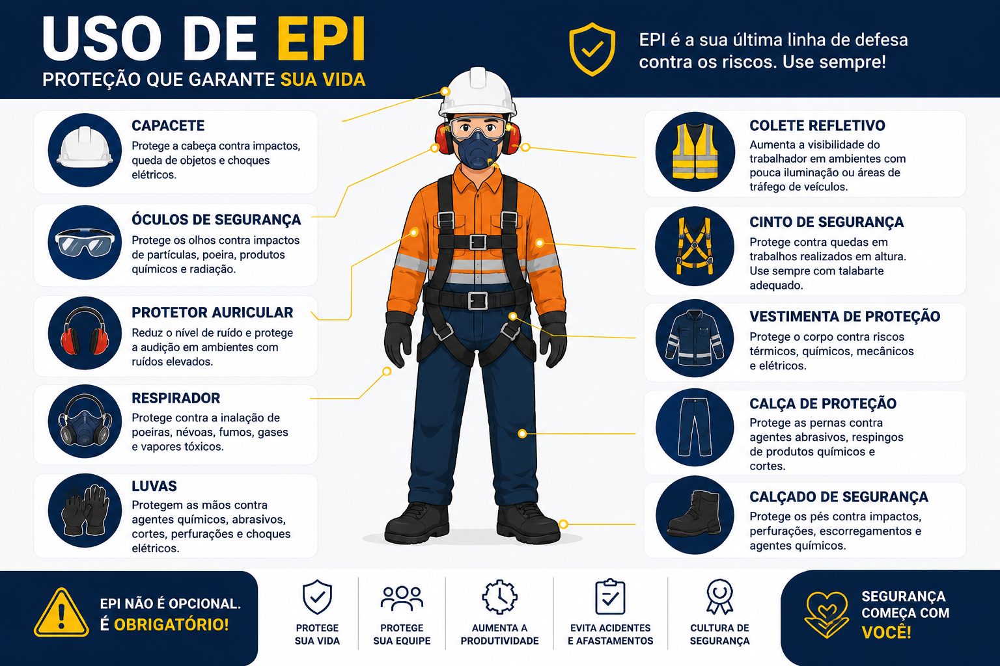

Duração
15 minutos
Nível
Básico
Área
Segurança
Tipo
Obrigatório
Objetivo do treinamento
O objetivo deste treinamento é mostrar a importância do uso correto dos EPIs no ambiente industrial, ajudando a reduzir riscos, acidentes e exposição a agentes perigosos.
Principais Equipamentos de Proteção
A imagem abaixo apresenta alguns dos principais EPIs utilizados em operações industriais e a função de cada um.

Mais do que usar, é preciso entender
Muitos acidentes acontecem mesmo quando o trabalhador está utilizando EPI. Isso normalmente ocorre por utilização inadequada, equipamento incorreto para a atividade ou falsa sensação de segurança.
O EPI deve ser escolhido considerando:
Tipo de risco
Poeira, impacto, ruído, produtos químicos, calor ou projeção de partículas.
Ambiente
Cada operação possui riscos diferentes e exige proteções específicas.
Compatibilidade
Alguns EPIs podem perder eficiência quando utilizados incorretamente em conjunto.